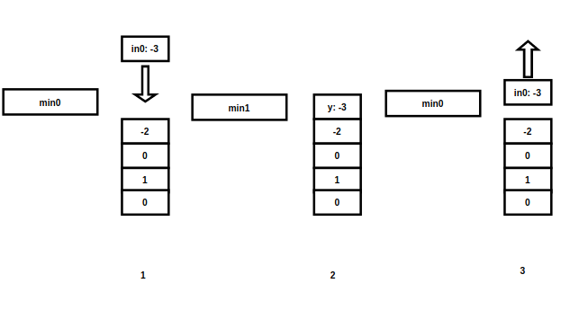

定义栈的数据结构, 请在该类型中实现一个能够得到栈的最小元素的 min 函数在该栈中, 调用 min、push 及 pop 的时间复杂度都是 O(1).
示例:
MinStack minStack = new MinStack();
minStack.push(-2);
minStack.push(0);
minStack.push(-3);
minStack.min(); --> 返回 -3.
minStack.pop();
minStack.top(); --> 返回 0.
minStack.min(); --> 返回 -2.提示：
各函数的调用总次数不超过 20000 次来源：力扣（LeetCode）
链接：https://leetcode-cn.com/problems/bao-han-minhan-shu-de-zhan-lcof
著作权归领扣网络所有. 商业转载请联系官方授权, 非商业转载请注明出处.
这题的思路： 1 个栈 + 未知变量, 出入栈的时候都要维护这个未知变量, 根据什么原则（不变量）来维护则是一个问题.
以下是思路的渐进(Asymptotic!).
// 执行用时：24 ms, 在所有 C++ 提交中击败了71.85% 的用户
// 内存消耗：14.7 MB, 在所有 C++ 提交中击败了48.02% 的用户
class MinStack {
public:
/** initialize your data structure here. */
MinStack() {}
void push(int x) {
if (data.empty()) {
min_value = x;
}
else if (x < min_value) {
min_value = x;
}
data.push_back(x);
}
void pop() {
data.pop_back();
min_value = *min_element(data.begin(), data.end());
}
int top() { return data.back(); }
int min() { return min_value; }
private:
vector<int> data;
int min_value;
};
思路很简单, 在 push 的时候”巧妙地“维护 min_value, 在 pop 的时候暴力地维护 min_value, 时间复杂度 O(n), 空间复杂度 O(n), push 的时候也可以简单粗暴地遍历所有值求最小值, 这样就更没意思了...
pop 场景1 个变量可以适应 push 场景, 因为就像一次普通的遍历求最小值一样, 但是 pop 可能导致最小值弹出, 那么下一个最小值是什么, 就不知道了. 所以用栈来记录最小值的变迁历史.
// 执行用时：24 ms, 在所有 C++ 提交中击败了71.85% 的用户
// 内存消耗：14.6 MB, 在所有 C++ 提交中击败了79.57% 的用户
和第一节的方法相比, 时间复杂度变成了 O(1), 空间依然是 O(n), 按 Theta 记法, 复杂度的上限从 n+1 变成 2n
pop我认为, 我们无法从以上 2 种方法中推导出来这种思路, 所以它是一种变异物种.
当然我们事后诸葛亮：我们必须要知道最小值的历史, 既然一个变量无法提供这种历史, 那么另外一个数据栈是否能提供记录历史的功能呢？
最小值有 2 种状态： 1 是保持不变, 2 是变小; 是什么导致最小值变化？输入. 输入有两种状态, 1 是 等于或大于最小值, 2 是小于最小值, 第二种情况导致最小值变小, 第一种情况导致最小值不变.
in0 | ge_min | lt_min
min0 | stay_put | min1 <- in0
我们需要提供一种方法：
f: (in0, min0) -> (y, min1)g: (y, min1) -> (in0, min0)”残差法“意识到:
f:
if in0 < min0 then (1)
let min1 = in0
(1) => in0 - min0 < 0
let y = in0 - min0,
then y < 0 (2)
if in0 >= min0 then (3)
then in0 - min0 >= 0
let y = in0 -min0
min1 = min0
then y >= 0 (4)
由于 in0 只有 2 种状态, 2 种状态分别导致没有交集的结论(y)
那么从结论(y)开始也可以反向推导出原来的状态
(1) => (2)
(3) => (4)
(2) => (1)
(4) => (3)
g:
如果 y >=0 (4) 那么说明了 (3)
min1 = min0
y = in0 - min0
y = in0 - min1
in0 = y + min1 (*)
如果 y < 0 (2) 说明 (1)
min1 = in0
in0 = min1 (*)
y = in0 - min0
y = min1 - min0
min0 = min1 - y (*)
星号标注的是还原. 这种方法让数据栈同时也记录了最小值的历史.
只要做到一个数字进去和出来后 MinStack 状态不变, 那么就可以确保在它进 N 个数字, 弹出 N 个也能保证状态不变, 因为State(N) 是 State(N-1) + N1 转换而来的, State(N-1) = State(N-2) + N2, so on so forth, 最后从 State(N) 也能还原到 State(1).
//执行用时：20 ms, 在所有 C++ 提交中击败了92.14% 的用户
//内存消耗：14.8 MB, 在所有 C++ 提交中击败了28.76% 的用户
//执行用时：28 ms, 在所有 C++ 提交中击败了39.84% 的用户
//内存消耗：14.8 MB, 在所有 C++ 提交中击败了30.68% 的用户
class MinStack
{
public:
/** initialize your data structure here. */
MinStack() {}
void push(int in0)
{
if (hybrid.empty())
{
min_value = in0;
}
long y = (long)in0 - min_value;
hybrid.push_back(y);
if (y < 0)
{
min_value = in0;
}
}
void pop()
{
long y = hybrid.back();
if (y < 0)
{
min_value = min_value - y;
}
hybrid.pop_back();
}
int top()
{
long y = hybrid.back();
long in0;
if (y < 0)
{
in0 = min_value;
}
else
{
in0 = y + min_value;
}
return in0;
}
int min() { return min_value; }
private:
vector<long> hybrid;
long min_value;
};
hybrid 表示现在这个栈记录的不仅是数据还有历史.
用 long 是因为两个 int 相减可能会导致溢出.
这种方法时间空间复杂度分别是 O(1), O(n)
外网广泛使用一种类似的方法, y = 2 * in - min_value, 甚至没出现过第 3 节所用的形式, 可能是文化不同导致.
一个印度人的推理：https://stackoverflow.com/a/55987195
in0 入栈：
in0 要么 < min0 要么 >= min0
if in0 < min0 then (1)
in0 - min0 < 0
in0 - min0 + in0 < in0
2 * in0 - min0 < in0
min1 = in0
let y = 2 * in0 - min0
y < in0
因为 (1), 所以 y < min1 (2)
if in0 >= min0 then (3)
min1 = min0
let y = in0
y >= min1 (4)
将 y 放入栈中
如果 (1) 则 (2)
如果 (3) 则 (4)
如果 (2) 则 (1)
如果 (4) 则 (3)
y 出栈:(每次出栈之前, MinStack 的状态, 和入栈之后的状态一样)
根据：
1. 如果 (2) 则 (1)
2. 如果 (4) 则 (3)
如果 y < min1(2), 就说明 in0 < min0(1),也就有
y = 2 * in0 - min0, min1 就是 in0, min0 = 2 * in0 - y
如果 y >= min1(4) 说明 y = in0 (3), 也就有 in0 = y
# 执行用时：56 ms, 在所有 Python3 提交中击败了96.11% 的用户
# 内存消耗：18 MB, 在所有 Python3 提交中击败了22.87% 的用户
class MinStack:
def __init__(self):
"""
initialize your data structure here.
"""
self.stack = []
self.min_value = 0
def push(self, x: int) -> None:
if len(self.stack) == 0:
self.min_value = x
self.stack.append(x)
return
if (x < self.min_value):
y = 2 * x - self.min_value
self.min_value = x
self.stack.append(y)
else:
self.stack.append(x)
def pop(self) -> None:
y = self.stack[-1]
ret = y;
if (y < self.min_value):
ret = self.min_value
self.min_value = 2 * self.min_value - y;
self.stack.pop()
def top(self) -> int:
y = self.stack[-1]
ret = y;
if (y < self.min_value):
ret = self.min_value
return ret
def min(self) -> int:
return self.min_value
第 3 节我假设有前后两种状态, 数字后缀表示前后
f: (in0, min0) -> (y, min1)g: (y, min1) -> (in0, min0)
状态从 1 到 2 最后到 3, 状态不变, 需要设计好转换关系, 但是怎么设计, 从 3, 4 节的推导来看, 似乎需要依靠一些临场发挥, 比如, 我知道 i 有多种状态, 我通过不断尝试, 设计好每个状态导致什么结论, 这些状态必须是每个结论的充分必要条件, 这样才能从结论推回到初始状态.